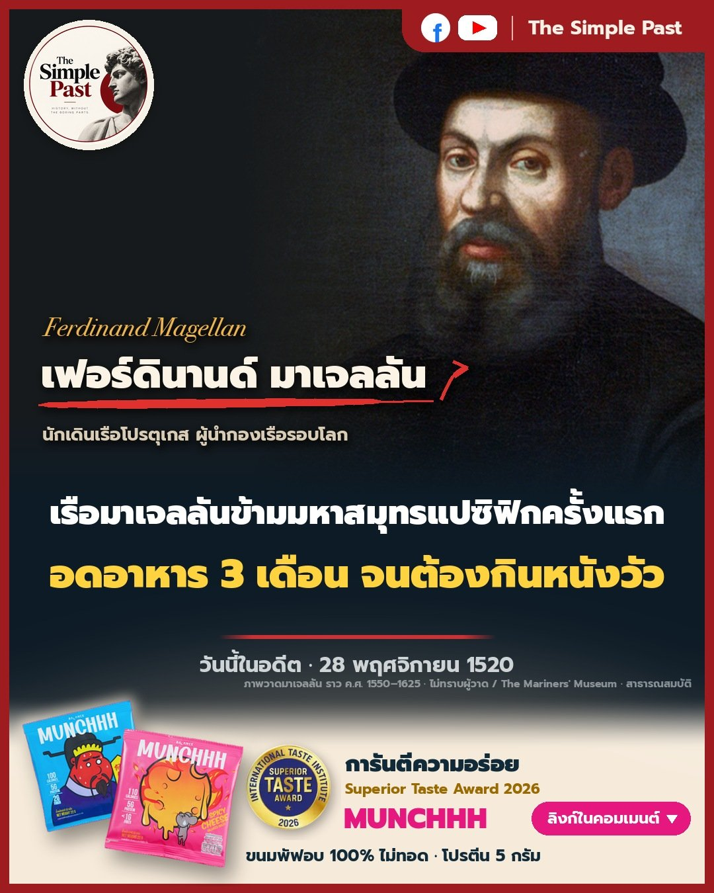

เรือมาเจลลันข้ามมหาสมุทรแปซิฟิกครั้งแรก อดอาหาร 3 เดือนจนต้องกินหนังวัว
วันที่ 28 พฤศจิกายน 1520 เรือของเฟอร์ดินานด์ มาเจลลัน 3 ลำแล่นออกจากปลายทวีปอเมริกาใต้ เข้าสู่มหาสมุทรที่ยังไม่มีชาวยุโรปคนไหนข้ามมาก่อน คลื่นลมวันนั้นสงบมาก เขาจึงตั้งชื่อว่า "แปซิฟิก" แปลว่าสงบ แต่มหาสมุทรนี้กว้างกว่าที่ใครคิด เรือแล่นอยู่กลางทะเลกว่า 3 เดือนโดยไม่เจอเกาะให้หาอาหาร ลูกเรือคนหนึ่งจดไว้ว่าต้องกินขนมปังที่มีหนอน และเอาหนังวัวที่หุ้มเสาเรือมาแช่น้ำทะเลแล้วย่างกิน ลูกเรือ 19 คนป่วยตาย ส่วนมาเจลลันเองถูกฆ่าตายที่ฟิลิปปินส์ในปีต่อมา
ภาพวาดมาเจลลัน ราว ค.ศ. 1550–1625 · ไม่ทราบผู้วาด / The Mariners' Museum · สาธารณสมบัติ